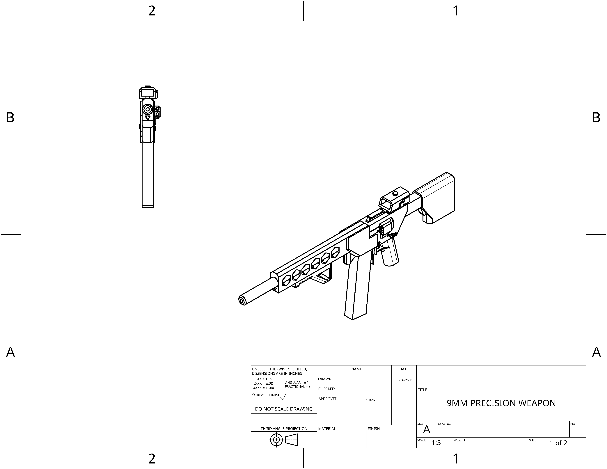
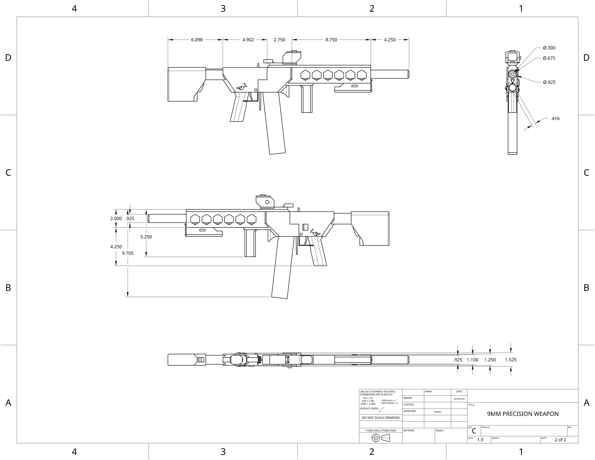

Utilizing the same receiver as the ECC infantry rifle, the ECC precession SMG is equiped with an advanced sensor system that allows for the multiple consecutive imapct of rounds to a single point to defeat armor.
 | | | | | | |
|---|---|---|
| Damage: | 20 | |
| Velocity: | 560mps | |
| Armor penetration: | 10mm | |
| Rate of fire: | 1000rpm | |
| Magazine size: | 42 |